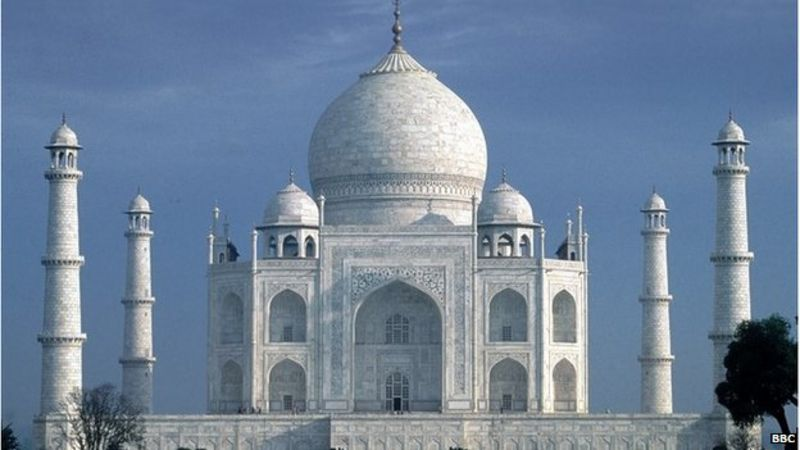

Symbol Of Love



(TAJ MEHAL)
The first time I saw this very famous and most visited monument ,it was nearly 15 years back. It was a small trip with my family and some family friends. I was mesmarised by the beauty and the story behind this symbol of love. Unfortunatly, I never got a chance to visit Agra, but still the memories remained inside me.
It has been Often described as one of the wonders of the world, the stunning 17th Century white marble Taj Mahal was built by Mughal emperor Shah Jahan as a mausoleum for his beloved wife Mumtaz Mahal, who died in childbirth
to know more about taj mehal u can visit the link Wikipidia
Facts
- Birth: 27 April 1593
- Place of Birth: Agra, India
- Death: 17 June 1631
- Place of Death: Burhanpur,India
- Father: Abu’l-Hasan Asaf Khan
- Mother: Diwanji Begum
- Siblings: Shaista Khan, Farzana Begum, Parwar Khanum
- Spouse: Shah Jahan
- Children: Six daughters and eight sons